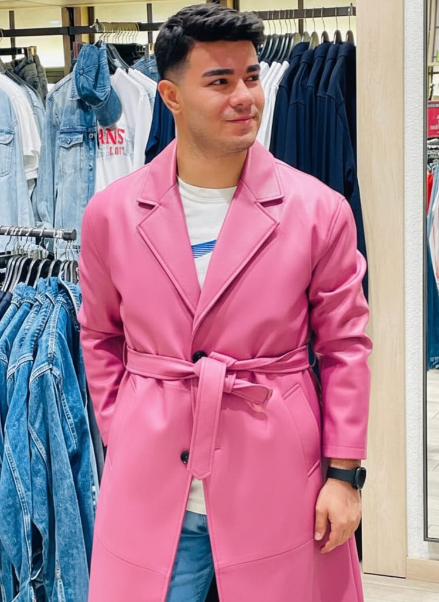
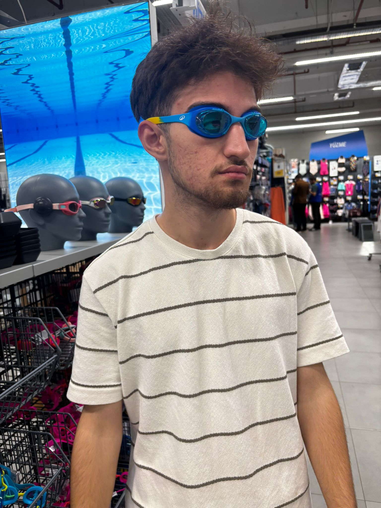
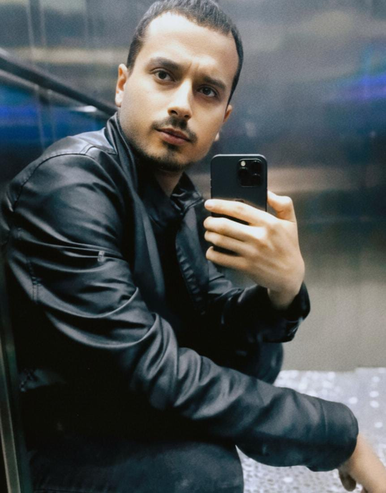
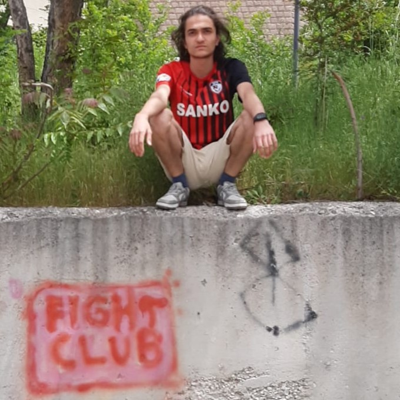

Ekip Üyeleri
Emir Alp Karageçen

Memleket: Kahramanmaraş
Bulunduğu Şehir: Bayburt
Medeni Durum: Yalnız
Üniversite web sayfası ULUDAĞ
Skills: İyi siyasetçi / Uludağ Üni. Öğrenci Toplulukları Başkanı
Onur Furkan Kılıç

Memleket: Hataydan dönme Gaziantep
Bulunduğu Şehir: Eskişehir
Medeni Durum: Değişken
Üniversite web sayfası SAÜ
Skills: OKEYTR TOP#1 / Clash Royale eski e-sporcu
Baran Sağır

Memleket: Gaziantep
Bulunduğu Şehir: İzmir
Medeni Durum: Çok Değişken
Üniversite web sayfası ESOGÜ
Skills: EskişehirOKEY TOP#1 / Decathlon MMA tüysiklet Şampiyonu / 63 level Drama Yaratıcı
Muhammed Mustafa Öz

Memleket: Adana
Bulunduğu Şehir: Sofya
Medeni Durum: Sevgilisi var
Üniversite web sayfası BOUN
Skills: Kalbinden silememek / 16. seviye laylaylomcu
Adem Uçar

Memleket: Gaziantep
Bulunduğu Şehir: Kİlis
Medeni Durum: Yalnız
Üniversite web sayfası ESOGÜ
Skills: Üst seviye karizma / Gizem yaratma
Mahir Can Şahin
Memleket: Şanlıurfa
Bulunduğu Şehir: Hakkari
Medeni Durum: Müzmin yalnız
Üniversite web sayfası ANKARA MEDİPOL
Skills: Kızlara karşı 20. seviye kalkan / kaçakçılık
Yusuf Çağrı Tabo

Memleket: Gaziantep
Bulunduğu Şehir: Oslo
Medeni Durum: Müzmin Yalnız
Üniversite web sayfası METU
Skills: Ders çalışma / Kızlara karşı 13. seviye kalkan